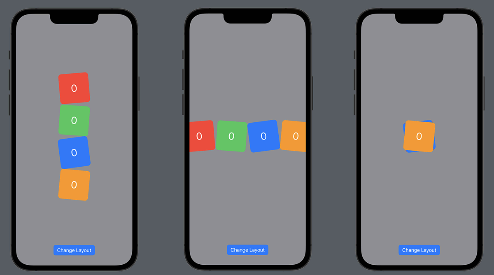
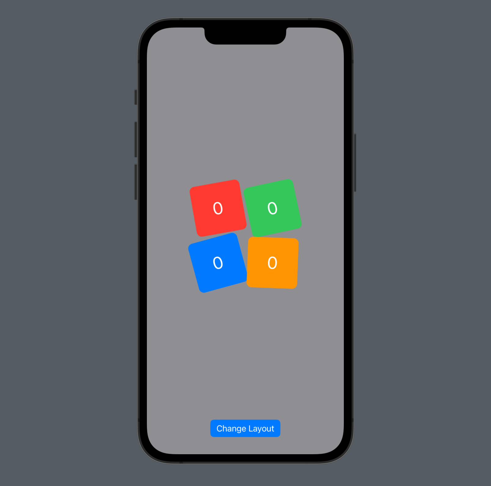
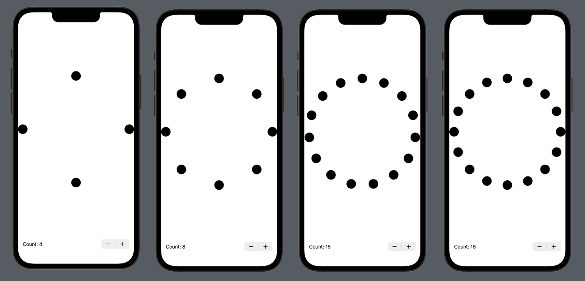
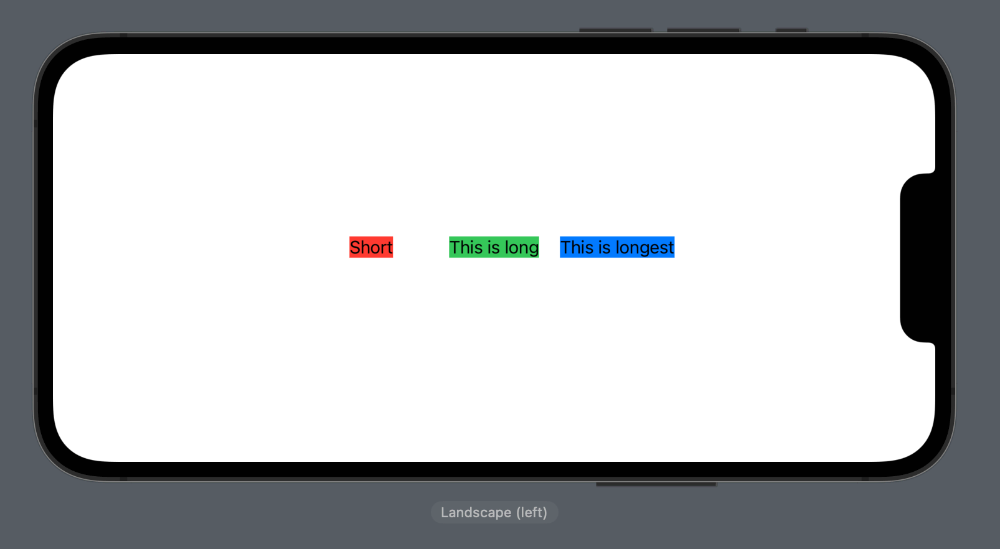
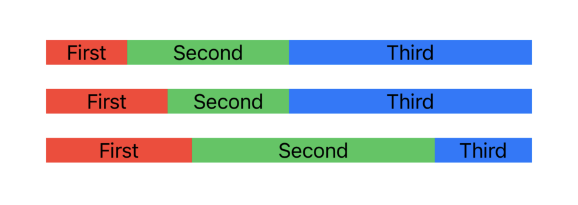
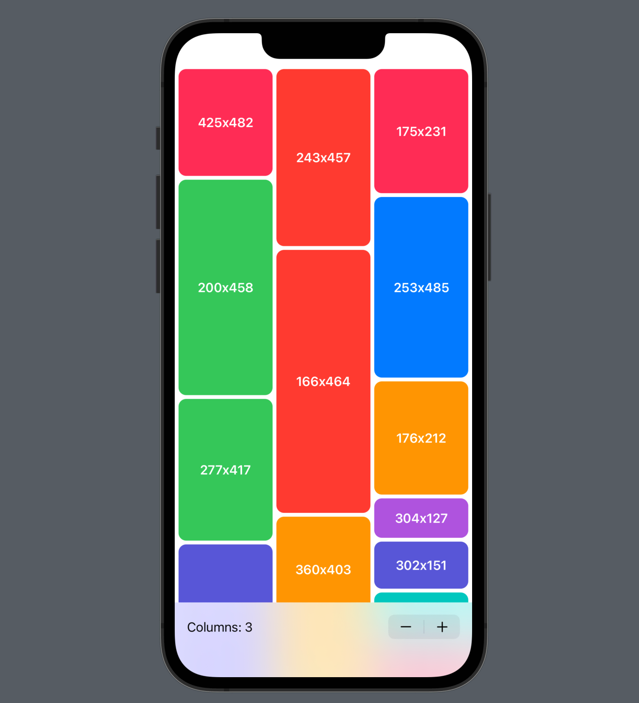

Switching between layouts can be a complicated beast in SwiftUI, because it’s easy to get stuck with view builder conditional content views that toss away your state, destroy your platform views, and screw up any animations.
However, if done right it’s possible to move smoothly from one container view to another, e.g. from a HStack to a VStack – not only does it avoid the aforementioned problems, but SwiftUI will even animate between the two layouts for us.
The key here is SwiftUI’s AnyLayout view, which is a type-erased wrapper around a container capable of performing layout. You might see the “Any” in the name and imagine this should be avoided much like AnyView, but relax: this wrapper is specifically designed to let us dynamically switch between different layouts, e.g. horizontal and vertical, without destroying any state along the way.
You’re already familiar with HStack, VStack, and ZStack, but SwiftUI provides special alternatives to those called HStackLayout, VStackLayout and ZStackLayout – all of which are designed to work with AnyLayout, so we can swap between them freely and have SwiftUI rearrange our views automatically. These have different names not because Apple is changing their mind or because they plan to remove the old names, but simply for compiler reasons: if Apple made the original stack types work with AnyLayout it would cause our code to build significantly slower as the compiler tried to figure out which implementation we meant in our code.
Anyway, let’s get into some code, so you can see all this in practice. First, I want to make a simple test view that we can use repeatedly, so create this new SwiftUI view now:
struct ExampleView: View {
@State private var counter = 0
let color: Color
var body: some View {
Button {
counter += 1
} label: {
RoundedRectangle(cornerRadius: 10)
.fill(color)
.overlay(
Text(String(counter))
.foregroundColor(.white)
.font(.largeTitle)
)
}
.frame(width: 100, height: 100)
.rotationEffect(.degrees(.random(in: -20...20)))
}
}Those views will provide enough variation that several of them will look suitably different on the screen, but they also have their own individual state – each view will have its own counter that increments when tapped.
What is more interesting is how we place a bunch of those on the screen at the same time. I already mentioned that AnyLayout has the job of wrapping another specific layout type, so in order to cycle through various layouts we’re going to create an array of them and cycle through them to use one at a time.
Start by adding this as a property to ContentView:
let layouts = [AnyLayout(VStackLayout()), AnyLayout(HStackLayout()), AnyLayout(ZStackLayout())]So, that contains three different ways of laying out views: vertical, horizontal, and depth. Which one we use will depend on another property that points to an index in that array, so add this next:
@State private var currentLayout = 0And our final property will be responsible for returning one layer from the array, based on the value of currentLayout:
var layout: AnyLayout {
layouts[currentLayout]
}For the body of our view, we’re going to create a VStack with four things inside:
ExampleView inside.We’ll also make the VStack take up all available space, and have a dark background color so our example views stand out clearly. Replace the current body property of ContentView with this:
VStack {
Spacer()
layout {
ExampleView(color: .red)
ExampleView(color: .green)
ExampleView(color: .blue)
ExampleView(color: .orange)
}
Spacer()
Button("Change Layout") {
withAnimation {
currentLayout += 1
if currentLayout == layouts.count {
currentLayout = 0
}
}
}
.buttonStyle(.borderedProminent)
}
.frame(maxWidth: .infinity, maxHeight: .infinity)
.background(.gray)That’s already enough to demonstrate the power of AnyLayout: when you run the app now you’ll see our four example views rearrange themselves smoothly every time the button is tapped. More importantly, as we switch between layouts each of the views will retain their state – you can tap on any of them to increase their counter, and those values will be preserved between layout changes.

That’s neat, right? But SwiftUI goes two steps further. First, alongside VStackLayout and others we can also use GridLayout to lay out views in a grid. To try it out, first modify your layouts array to this:
let layouts = [AnyLayout(VStackLayout()), AnyLayout(HStackLayout()), AnyLayout(ZStackLayout()), AnyLayout(GridLayout())]Second, modify your layout code to this:
layout {
GridRow {
ExampleView(color: .red)
ExampleView(color: .green)
}
GridRow {
ExampleView(color: .blue)
ExampleView(color: .orange)
}
}That splits up our views into two rows, so if you run the app now you’ll see we get a 2x2 grid layout alongside the other three.

If you pause to think about it, something neat is happening here: three of our four layouts aren’t grids, and yet SwiftUI won’t bat an eyelid about them containing GridRow. That particular view only does anything when contained inside a grid, and for all other layouts it behaves identically to a Group.
So now we’re cycling between four completely different layouts for our views, with SwiftUI preserving animation, state, and platform views throughout. But I said SwiftUI goes two steps further, so what’s the second one?
Well, all four of these layout types conform to an underlying protocol named simply Layout. Not only can we create our own types that conform to Layout, but when doing so those custom layouts can be used with AnyLayout too – you can move smoothly from the built-in layouts to ones you built yourselves.
Let’s look at that next…
The first custom layout we’re going to build is by no coincidence also the easiest, and is designed to place its views in a circle.
To build this layout you’ll need to meet the two most important methods in the Layout protocol:
sizeThatFits() method is given a proposed size for our layout, along with all the subviews that are inside, and must return the actual size our container wants to have. (Remember the three-step layout process: step 1 is the parent proposing a size, step 2 is the child deciding on its actual size, and step 3 is the parent placing the child based on that size.)placeSubviews() method is given the actual CGRect the parent has allocated for the child, which will match the size we returned from sizeThatFits(). It will also be given the original proposed size, because it’s possible the parent proposed multiple sizes before one was finally chosen, and we’ll also get the subviews ready to place.There’s one more thing both these methods accept, and we’ll be covering it in a later chapter: a cache, so that you’re doing slow calculations to create your layout you can skip doing the work more often than is necessary.
Anyway, let’s begin by creating a new struct with stubs for the two required methods:
struct RadialLayout: Layout {
func sizeThatFits(proposal: ProposedViewSize, subviews: Subviews, cache: inout Void) -> CGSize {
}
func placeSubviews(in bounds: CGRect, proposal: ProposedViewSize, subviews: Subviews, cache: inout Void) {
}
}Swift will complain because we aren’t returning something from sizeThatFits(), but that’s okay: that entire method is just one line of code, so we might as well fill it in now. Put this inside sizeThatFits():
proposal.replacingUnspecifiedDimensions()Before I explain what it does, I should make one thing clear: although that is the correct and only line of code for this radial layout, many if not most of the custom layouts you will make in the future will need significantly more logic to work. So, if you were thinking “wow, these custom layouts are easy,” you shouldn’t get your hopes up too much!
SwiftUI calls sizeThatFits() with a proposed view size and all our subviews. Very often you’ll want to query those subviews to ask how much space they want before deciding how much the whole container wants, but for a radial layout we don’t care – we just want to take all the space that was offered to us.
The proposed view size we receive into sizeThatFits() comes from our container’s parent, and it might call the method several times to get a full understanding of what our layout is happy to use. Sometimes we’ll be passed in a specific size the parent wants to give us, e.g. 300x200, sometimes we’ll be passed only part of a size, e.g. we can have 300 points horizontally and no vertical limit, and sometimes we’ll be passed one of three special values:
The point is that this proposal isn’t just a simple width and height, because even without the infinite and zero values it’s still possible to get nil for either or both width and height.
What replacingUnspecifiedDimensions() does is return a fully-formed CGSize with no optional width or height – both values will have something meaningful in there, with nil values being replaced by a default of 10. So, our sizeThatFits() method effectively means “I’ll take all the space you offered, but if you didn’t specify something I’ll ask for just 10 points.” Yes, 10 points isn’t really enough for a good layout, but there isn’t really a good alternative here – we can’t really create a circular layout unless we know the amount of space available to us.
This situation might seem familiar to you: back in the chapter on layout neutrality I mentioned that Color.red inside a scroll view would be given a nominal 10-point height because it wouldn’t make sense to use anything else. Hopefully now you can see where that value of 10 comes from – internally the Color is using replacingUnspecifiedDimensions() to replace its nil inputs with 10.
That’s enough talk, so let’s move on to the placeSubviews() method. This is more challenging, because it’s our job to figure out how to place all our subviews in a circle. It takes a small amount of trigonometry, but hopefully it won’t challenge you too much!
To begin with, we need to calculate the radius of the bounds we’re working with, then divide 360 degrees by the number of subviews so we can see how many degrees of our circle should be allocated to each view.
Start by adding these two lines to placeSubviews():
let radius = min(bounds.size.width, bounds.size.height) / 2
let angle = Angle.degrees(360 / Double(subviews.count)).radiansNote: The Angle.degrees(…).radians part is intentional – it’s a little easier to think about 360 degrees in a circle, but we need the final “angle per subview” value as radians.
Now we know the radius of our circle and how many degrees of our circle should be allocate to each view, we can start to place each view. This means going over all the views in subviews, figuring out how much space it wants, then placing it on our circle as appropriate.
Add this loop underneath the previous lines:
for (index, subview) in subviews.enumerated() {
// more code to come
}If we place every view at the very edge of our circle, we’ll hit a problem because a large part of each view will lie outside the circle’s perimeter. For example, if the radial layout goes horizontally edge to edge on the screen, the views on the left and right edge will both be hanging half way off the screen, which is a poor experience.
Rather than placing our views at the very edge of our circle, we’ll instead ask each view how much space it wants, then subtract half that from the position it would otherwise have been given – rather than “edge of the circle” it’s “edge of the circle minus half the view’s size” so it’s fully inside the circle.
So, the first line we’ll add inside our loop will be to ask each subview for its ideal size, like this:
let viewSize = subview.sizeThatFits(.unspecified)Now for the trigonometry:
There are two bonus complications here:
sin() and cos().Add these two lines to placeSubviews() below the previous code:
let xPos = cos(angle * Double(index) - .pi / 2) * (radius - viewSize.width / 2)
let yPos = sin(angle * Double(index) - .pi / 2) * (radius - viewSize.height / 2)At this point we know where to place this view inside our container, but there are still two more small complications.
First, we’ve calculated where the view should be by multiplying its angle by our container’s radius, with a little extra logic in there for handling 0 degrees being up and ensuring views always lie inside the circle. What we haven’t done is offset this position so that it’s relative to the center of our container, which means right now those xPos and yPos values are offsets from the top-left corner of our container.
To fix this, we’re going to convert our two position values into a CGPoint, and while doing so add in the midX and midY of our bounds, so that our circle is centered on the center of our container as you’d expect.
Add this line to the method next:
let point = CGPoint(x: bounds.midX + xPos, y: bounds.midY + yPos)The second small complication comes by asking a question: when placing the subview at point, are we saying the top-leading of the subview should be there? Or the center of the subview? Or something else? If we don’t specify SwiftUI will assume we mean top leading, but we’ve actually calculated the center position so we need to say that.
Attached to this is a chance to tell the subview exactly how much space we have allocated to it. Remember, children choose their final sizes and parents must respect that, so this space allocation is just another proposal – the child can do what it likes. We don’t care how much size the view takes up, so we’ll use .unspecified here.
Add this final line of code to end the loop:
subview.place(at: point, anchor: .center, proposal: .unspecified)So, that asks each view for its ideal size, then uses it to place it inside our circle’s perimeter. The whole thing isn’t a lot of actual code, but it does take quite a bit of explaining because there’s a lot of power here.
We’ll look into these layouts more in coming chapters, but first I want you to try it out in a SwiftUI view – try replacing your ContentView struct with this one:
struct ContentView: View {
@State private var count = 16
var body: some View {
RadialLayout {
ForEach(0..<count, id: \.self) { _ in
Circle()
.frame(width: 32, height: 32)
}
}
.safeAreaInset(edge: .bottom) {
Stepper("Count: \(count)", value: $count.animation(), in: 0...36)
.padding()
}
}
}That creates lots of circles in a radial layout, but adds a stepper to increment or decrement the circle count using animation. Try running it now – it’s a simple view, and again our radial layout code is pretty short, but I think you’ll be impressed by how good the results are!

The next custom layout we’re going to look at will create a HStack where each view is allocated exactly the same width.
In the “Fixing view sizes” chapter I showed you how we could make two views in the same HStack have the same height by using .frame(maxHeight: .infinity) on the views and .fixedSize(horizontal: false, vertical: true) on the HStack, but this is different: here we want all the views to have the same width, which is trickier to solve.
Now, you might think one solution is to give each child view .frame(maxWidth: .infinity), which will cause each view to resize freely horizontally – the HStack will just divide its available space by the number of views. However, the problem with this approach is that it makes all the views take up more space than is needed, causing our HStack to grow.
Yes, we want all our views to have the same size, but ideally that size is whatever is the largest of all the subviews – if subview A is 100 wide, B is 50 wide, and C is 150 wide, we want to give A, B, and C 150 points each, because that’s the largest width of the subviews.
Let’s start writing some code – add this empty struct now:
struct EqualWidthHStack: Layout {
}Before we write sizeThatFits() and placeSubviews(), we’re going to write two helper methods that do work shared in both those other places. There are extremely concise ways of writing both of these functionally, but honestly the main focus here is understanding how the Layout protocol works so I’m going to give you longer code that is much easier to understand.
The first helper method has the job of going over all the subviews we’re laying out and figure out the maximum size – the maximum width of all the views, and the maximum height of all the views. This can be done by:
CGSize.zero maximum size to begin with.So, we’re not saying the maximum width and height for any one view, but instead the maximum height across all subviews and maximum width across subviews.
Add this method to the struct now:
private func maximumSize(across subviews: Subviews) -> CGSize {
var maximumSize = CGSize.zero
for view in subviews {
let size = view.sizeThatFits(.unspecified)
if size.width > maximumSize.width {
maximumSize.width = size.width
}
if size.height > maximumSize.height {
maximumSize.height = size.height
}
}
return maximumSize
}The second helper is a more complex one, but it solves an important problem that we can mostly ignore when working with SwiftUI: some views like to have a certain amount of distance between themselves and other views. I don’t mean because of padding; that’s part of the view’s size. Instead, this is a really neat feature of SwiftUI that allows a Text view to have more or less spacing depending on whether its neighbor is another Text view or is an Image. Even better, this automatic spacing automatically varies across platforms, so you’ll get different values on watchOS and tvOS because of the space differences.
Anyway, this second helper method is going to create a Double array containing spacing values, one for each subview. This can mostly be done by asking SwiftUI how much distance should be placed between one view and the next one, but the last subview is a special case because it doesn’t have a neighbor afterwards – we’ll return 0 for that.
Add this second helper now:
private func spacing(for subviews: Subviews) -> [Double] {
var spacing = [Double]()
for index in subviews.indices {
if index == subviews.count - 1 {
spacing.append(0)
} else {
let distance = subviews[index].spacing.distance(to: subviews[index + 1].spacing, along: .horizontal)
spacing.append(distance)
}
}
return spacing
}That’s most of the hard work done now, so we can finally turn our eyes to the sizeThatFits() method. Remember, this is given a proposed size and all the subviews it needs to lay out, and should return a CGSize containing the actual size it wants to use.
Thanks to our helper methods, implementing sizeThatFits() is straightforward. We need to:
maximumSize() to find the largest width and height across all our subviews.spacing() to get an array of the spacing between all the views, then sum those numbers into a single value.Go ahead and add this sizeThatFits() method now:
func sizeThatFits(proposal: ProposedViewSize, subviews: Subviews, cache: inout Void) -> CGSize {
let maxSize = maximumSize(across: subviews)
let spacing = spacing(for: subviews)
let totalSpacing = spacing.reduce(0, +)
return CGSize(width: maxSize.width * Double(subviews.count) + totalSpacing, height: maxSize.height)
}The placeSubviews() method is a little trickier, but it still leans heavily on those two helper methods we wrote. So, start with this:
func placeSubviews(in bounds: CGRect, proposal: ProposedViewSize, subviews: Subviews, cache: inout Void) {
let maxSize = maximumSize(across: subviews)
let spacing = spacing(for: subviews)
// more code to come
}In our radial layout example we used an .unspecified proposal size for each view because we didn’t care how much size each view was, but here we do care: we want every view to have the same size, which means creating a specific size proposal and giving it to the view. Again, that view might ignore the proposed size, but it’s important we give it the chance to take it into account.
The size proposal we’ll be sending every subview is simple: we already calculated the maximum width and height across our subviews, so that becomes our proposed size for every view. Add this line next:
let proposal = ProposedViewSize(width: maxSize.width, height: maxSize.height)The final step is to lay out the views. To make this happen, we’ll create an x variable that represents the center X position of the next view we’re laying out. When we’re just starting out this will have the position of our left edge, plus half our maximum size – we’re centering the views, remember.
Please add this line now:
var x = bounds.minX + maxSize.width / 2And now all that remains is to loop over the subviews, placing each one at the x position and in the vertical center of our container. Remember, it’s important we tell SwiftUI that we’re specifying the center of our views rather than the top-leading edge or something else, and this time we are going to use the proposal parameter because we’re going to ask each view to fit itself into the shared ProposedViewSize we made a moment ago.
The key thing here is that every time we place a view we need to modify x upwards by adding our maximum width value, but also by adding the spacing for the view we just added so that this view has the correct amount of space between it and the next view.
We can finish the method by adding this loop:
for index in subviews.indices {
subviews[index].place(at: CGPoint(x: x, y: bounds.midY), anchor: .center, proposal: proposal)
x += maxSize.width + spacing[index]
}That completes our layout, so now all that remains is to try it out in a SwiftUI view:
struct ContentView: View {
var body: some View {
EqualWidthHStack {
Text("Short")
.background(.red)
Text("This is long")
.background(.green)
Text("This is longest")
.background(.blue)
}
}
}When that runs you’ll see the views spread out across the screen, with “This is long” dead in the center. This is exactly what we want: the views themselves have retained the natural size (which is why the colored boxes are small), but their container has allocated each of them equal space.

Even though you might think this effect is easier to achieve than a radial layout, you’ll notice it actually took more code – and that’s even with adding two helper methods. Now, to be fair we could dramatically reduce the code length if we switched to a more condensed, functional approach:
private func maximumSize(across subviews: Subviews) -> CGSize {
let sizes = subviews.map { $0.sizeThatFits(.unspecified) }
return sizes.reduce(.zero) { largest, next in
CGSize(width: max(largest.width, next.width), height: max(largest.height, next.height))
}
}
private func spacing(for subviews: Subviews) -> [Double] {
subviews.indices.map { index in
guard index < subviews.count - 1 else { return 0 }
return subviews[index].spacing.distance(to: subviews[index + 1].spacing, along: .horizontal)
}
}However, keep in mind that the radial layout didn’t even need those methods in the first place: we always placed views at their natural size, and didn’t care about any spacing requests they had because they were being placed in a circle. Still, I wanted to show you this layout because sizing and spacing are both important skills and I’m sure you’ll use them in your own work!
If you’re looking for a challenge, how about you try implementing an EqualHeightVStack?
Have you ever wanted to make SwiftUI views take up a proportional amount of space in a HStack? I certainly have – to be able to say “give this view 20% of the space, this other view 30% of the space, and this final view the remaining 50%” is something that appeared briefly in the very earliest SwiftUI beta. Sadly it disappeared before SwiftUI 1.0 shipped and has yet to return, but with the power of the Layout protocol we can bring it back.
This is made possible because of SwiftUI’s layoutPriority() modifier, which controls how willing a view is to shrink or stretch. All views have a default layout priority of 0, but if you give a higher value to something it will grow to fill all the available space more readily.
This layout priority can be read through the Layout protocol, so we’re going to hijack it here as a way of specifying how much relative space should be allocated to a view. Rather than forcing developers to add numbers up to 1 or similar, we will instead sum up all the priorities for the views we’re trying to lay out, then calculate the relative size for a view based on its priority compared to the total. So, the total might be 1.0, 100, 12, or any other number depending on what works at the call site.
We can start by creating a struct for our layout, giving it the one property we care about: how much space we want to have between our views. This will be a single fixed value provided by the user rather than querying each subview for how much spacing it wants, because the rest of the space will be allocated proportionally.
Add this now:
struct RelativeHStack: Layout {
var spacing = 0.0
}All the hard work for this layout is contained in one helper method, which has the job of calculating all the frames for all the views in one pass. This will be called by sizeThatFits() so we know how much space we need, and also called again by placeSubviews() so we can actually assign each view its frame.
Because there’s a lot of code here, I’m going to break it down step by step so I can explain as I go. Start by adding this method stub:
func frames(for subviews: Subviews, in totalWidth: Double) -> [CGRect] {
}Already you can see we’re passing in all the subviews, along with whatever is the total width allocated to our container.
Our first job will be to figure out how much total spacing we’ll be using across our layout. We already added a spacing property to control the amount of space between individual views, so to find the total spacing we just need to multiply spacing by 1 less than our column count. Why one less? Well, if we have two columns, we need only one space – the one that’s between the two columns. We don’t need to add space on either side of the layout, because that’s something that will be decided by whomever is placing the container.
So, start by adding this to the frames() method:
let totalSpacing = spacing * Double(subviews.count - 1)Now we know how much space we have to allocate to each view, which is our total width minus our total spacing:
let availableWidth = totalWidth - totalSpacingThe final constant I want to set up front is an important one: what is the total of all the layout priorities of the views we’re working with? This might add up to 1.0, but really it’s arbitrary – this is a relative layout, after all.
So, add this constant now:
let totalPriorities = subviews.reduce(0) { $0 + $1.priority }Now it’s time to start calculating frames, which means creating two variables:
spacing to our X value.Add these lines now:
var viewFrames = [CGRect]()
var x = 0.0And now we have the main chunk of this method, which needs to go over all the subviews we have, figuring out how much space each one should be allocated. Start with this:
for subview in subviews {
// more code to come
}
return viewFramesInside that loop comes the real work. Remember, this is calculated using the layout priority assigned to the view rather than trying to take into account how one view should be spaced from others.
We already know how much space we have to allocate to all views (availableWidth), and we know the sum of all our subview priorities (totalPriorities), so we can calculate the width for this subview by multiplying the available width by the view’s priority, then dividing the result by the total priorities, like this:
let subviewWidth = availableWidth * subview.priority / totalPrioritiesNow that we know how much space this particular subview can have, we can put it forward as a proposal and see what comes back:
let proposal = ProposedViewSize(width: subviewWidth, height: nil)
let size = subview.sizeThatFits(proposal)Again, that size is decided solely by the child, but it will take into account our request: we’re asking for a specific width, but saying it can grow as high as it likes.
We can then combine our x value with the size we received into a CGRect, and add it to our array:
let frame = CGRect(x: x, y: 0, width: size.width, height: size.height)
viewFrames.append(frame)And finally we need to add to x the width of the view we placed, plus the spacing for the whole container, so the next view we lay out will go into the correct location:
x += size.width + spacingThat completes our helper method – as you can see, it does all the hard work of calculating frames for our views, which makes the rest of this layout straightforward.
First, the sizeThatFits() method. This will:
replacingUnspecifiedDimensions() on the proposed container size, to make sure we always have sensible values to work with.frames() method to calculate all the view frames.CGSize containing our proposed width alongside the maximum Y value we got back from the frames() method – the bottom edge of the lowest view.Add this method to the RelativeHStack struct now:
func sizeThatFits(proposal: ProposedViewSize, subviews: Subviews, cache: inout Void) -> CGSize {
let width = proposal.replacingUnspecifiedDimensions().width
let viewFrames = frames(for: subviews, in: width)
let height = viewFrames.max { $0.maxY < $1.maxY } ?? .zero
return CGSize(width: width, height: height.maxY)
}To finish up we need to implement placeSubviews(). Because the frames() method already does all the hard work of calculating every frame for every view, this just needs to loop over all the subviews and assign the position and size we calculated for each one. This time, though, we’re assigning the leading edge of each view, so that all our views are positioned in the vertical center of our container.
Add this last method to RelativeHStack:
func placeSubviews(in bounds: CGRect, proposal: ProposedViewSize, subviews: Subviews, cache: inout Void) {
let viewFrames = frames(for: subviews, in: bounds.width)
for index in subviews.indices {
let frame = viewFrames[index]
let position = CGPoint(x: bounds.minX + frame.minX, y: bounds.midY)
subviews[index].place(at: position, anchor: .leading, proposal: ProposedViewSize(frame.size))
}
}Note how we’re proposing a size to the view based on the return value from the frames() method – if you remember, that’s the size we got back when we called subview.sizeThatFits() for this view, so it should be acceptable.
That’s our layout complete! To give it a try, create some flexible views then assign layout priorities however you want.
For example, we could create views with priorities 1, 2, and 3:
RelativeHStack(spacing: 50) {
Text("First")
.frame(maxWidth: .infinity)
.background(.red)
.layoutPriority(1)
Text("Second")
.frame(maxWidth: .infinity)
.background(.green)
.layoutPriority(2)
Text("Third")
.frame(maxWidth: .infinity)
.background(.blue)
.layoutPriority(3)
}Or we could use 4, 4, 8 to get two views the same size then one that’s twice as large, or use 30, 50, 20 if you prefer to think in percentages, or really whatever numbers work best for your layout.

Masonry layouts – sometimes called “waterfall” layouts – allow us to create a grid that’s ragged, which means although there are distinct columns in place there aren’t “rows” because each view is just slotted in wherever it fits according to its aspect ratio. This is a really common layout on the web, and in apps are mainly used for content walls – when the user is scrolling through a category of pictures looking for something specific, like Pinterest.
Implementing this is actually not as hard as you might think, particularly now that you’ve implemented three other layouts already. In fact, as you’ll see our approach is almost identical to creating RelativeHStack – large parts of the code are almost identical.
Start with a struct for the layout, giving it two properties: how many columns we have, and how much spacing we want between each item in our layout. The number of columns must be at least 1 otherwise the layout makes no sense, so we’ll add a custom initializer that ensures the column count is always at least 1.
Add this now:
struct MasonryLayout: Layout {
var columns: Int
var spacing: Double
init(columns: Int = 3, spacing: Double = 5) {
self.columns = max(1, columns)
self.spacing = spacing
}
}Just like with RelativeHStack, all the real work for this layout is contained in one helper method that calculates and returns frames for all the views. Start by adding this method stub:
func frames(for subviews: Subviews, in totalWidth: Double) -> [CGRect] {
}Just like before, we can figure out much total spacing we have by multiplying spacing by 1 less than our column count, like this:
let totalSpacing = spacing * Double(columns - 1)Now we know how much spacing we have in total, we can calculate how much space is left for the columns by subtracting totalSpacing from totalWidth. If we then divide that number by our column count, we’ll have how much space should be allocated to each column. Add this next:
let columnWidth = (totalWidth - totalSpacing) / Double(columns)There’s one last number I want to set up front, which is how much space we need to allocate for one column including its spacing, because it makes our code a little easier to read:
let columnWidthWithSpacing = columnWidth + spacingAt this point we know all the values we need to calculate our frames, so our first job is to create a ProposedViewSize that we can present to each view. This will be the same for all views: “you can use as much height as you want, but I’d like your width to be the same as our column width.”
Add this line next:
let proposedSize = ProposedViewSize(width: columnWidth, height: nil)When it comes to calculating frames, masonry layouts assign views to columns in a very specific way – we don’t do it randomly because that would just cause a mess. Instead, our goal for any given view is to place it into the shortest column so that we aim for some balance. That doesn’t mean we’ll get balance because perhaps the final view we place in a column is much longer than all the others, but we’re at least aiming for it.
This means we need two arrays: one storing all our view frames across all columns, and one storing the heights of each column we have. Add these lines now:
var viewFrames = [CGRect]()
var columnHeights = Array(repeating: 0.0, count: columns)We can now loop over all our subviews, figure out which column is the shortest, and place our view there. As we go through, we’ll also stash the latest view frame away in our viewFrames array, which is the value that will be returned from this method.
Please add this code now:
for subview in subviews {
// more code to come
}
return viewFramesLike I said, the first step in that loop is to figure out which column is shortest. If we assume that the shortest is the first one and set a gigantic height for it, we can loop over all the other columns and check whether they are shorter or not. If we find one that is shorter, we’ll make that our new selected column and use its height for our shortest height.
Replace the // more code to come comment with this:
var selectedColumn = 0
var selectedHeight = Double.greatestFiniteMagnitude
for (columnIndex, height) in columnHeights.enumerated() {
if height < selectedHeight {
selectedColumn = columnIndex
selectedHeight = height
}
}At this point we know exactly which column should be used to place our subview, so we can figure out the X and Y coordinates for it. The X value is simply the index of the column multiplied by the columnWidthWithSpacing, and the Y value is the current height of whichever column was shortest. Add this just after the previous loop:
let x = Double(selectedColumn) * columnWidthWithSpacing
let y = columnHeights[selectedColumn]To calculate the view’s size, we just need to ask it: given the proposed size we made earlier, how much space does it actually want? Add this next:
let size = subview.sizeThatFits(proposedSize)Again, the view is free to ignore that proposal entirely, which would make our layout a mess. That’s how SwiftUI works, though: the parent proposes a size, but the child gets to make the final choice and the parent must respect that.
At this point we know the full set of data for the frame of this view, so we can create a CGRect from it:
let frame = CGRect(x: x, y: y, width: size.width, height: size.height)To end this loop we need two more things. First, we just added a subview to a column, so we need to adjust the height of that column to include the subview’s height plus our spacing property. That doesn’t mean we’re always adding spacing below the finished, placed views; these column heights are just used for calculating where views ought to go.
Add this now:
columnHeights[selectedColumn] += size.height + spacingAnd the final part of the loop is to add the frame value we created to our viewFrames array, which is being returned from the method:
viewFrames.append(frame)That completes our frames() method – it’s not vast amounts of code, but it is done very precisely to make sure we balance each column as best as we can. The point is that eventually it returns the viewFrames array, which contains all the frames for all subviews.
With that hefty helper method in place, we can now turn to sizeThatFits() and placeSubviews(), both of which lean on it heavily. In fact, both these two are almost identical to their equivalents from RelativeHStack, so we can take a shortcut – copy and paste those two methods from your RelativeHStack code into your MasonryLayout, like this:
func sizeThatFits(proposal: ProposedViewSize, subviews: Subviews, cache: inout Void) -> CGSize {
let width = proposal.replacingUnspecifiedDimensions().width
let viewFrames = frames(for: subviews, in: width)
let height = viewFrames.max { $0.maxY < $1.maxY } ?? .zero
return CGSize(width: width, height: height.maxY)
}
func placeSubviews(in bounds: CGRect, proposal: ProposedViewSize, subviews: Subviews, cache: inout Void) {
let viewFrames = frames(for: subviews, in: bounds.width)
for index in subviews.indices {
let frame = viewFrames[index]
let position = CGPoint(x: bounds.minX + frame.minX, y: bounds.midY)
subviews[index].place(at: position, anchor: .leading, proposal: ProposedViewSize(frame.size))
}
}The only actual change is in the place() method inside placeSubviews(), because we want our views placed by their top-leading edge rather than just their leading edge. This is the default behavior when placing views, which means making two changes:
midX of our container so the views are centered correctly.anchor: .leading from the code, so it aligns top-leading.So, change the loop in your placeSubviews() method to this:
for index in subviews.indices {
let frame = viewFrames[index]
let position = CGPoint(x: bounds.minX + frame.minX, y: bounds.minY + frame.minY)
subviews[index].place(at: position, proposal: ProposedViewSize(frame.size))
}And that’s our layout complete! Honestly, once you see how well it works I think you’ll be really pleased because it’s an extremely effective algorithm.
To actually give this a meaningful test, we can create a trivial placeholder view that displays a random color and its size. What matters is that this view has a fixed aspect ratio, and the same is true if you want to use your own custom pictures instead – make them resizable, but ensure they stay at the correct aspect ratio so they can be placed into our columns well.
Here’s my placeholder view:
struct PlaceholderView: View {
let color: Color = [.blue, .cyan, .green, .indigo, .mint, .orange, .pink, .purple, .red].randomElement()!
let size: CGSize
var body: some View {
ZStack {
RoundedRectangle(cornerRadius: 10)
.fill(color)
Text("\(Int(size.width))x\(Int(size.height))")
.foregroundColor(.white)
.font(.headline)
}
.aspectRatio(size, contentMode: .fill)
}
}Important: The size displayed in those views won’t match the actual size used to place them in our grid, because they’ll get resized up or down as needed. However, the aspect ratio will be the same between the view’s requested and actual size, which is what matters.
To try this out we can now create a ContentView that creates 20 random view sizes and places them into a MasonryLayout inside a ScrollView. To make things more interesting, I’m going to make the column count adjustable using a stepper:
struct ContentView: View {
@State private var columns = 3
@State private var views = (0..<20).map { _ in
CGSize(width: .random(in: 100...500), height: .random(in: 100...500))
}
var body: some View {
ScrollView {
MasonryLayout(columns: columns) {
ForEach(0..<20) { i in
PlaceholderView(size: views[i])
}
}
.padding(.horizontal, 5)
}
.safeAreaInset(edge: .bottom) {
Stepper("Columns: \(columns)", value: $columns.animation(), in: 1...5)
.padding()
.background(.regularMaterial)
}
}
}That completes our third and final layout, and I think it really shows off just how flexible SwiftUI is. Remember, all three layouts we’ve made work great in the AnyLayout example from earlier – we can flip through grids, ZStack, masonry layout, relative width layout, radial layout, etc, all without changing any other part of our code.

Before we’re done, I’d like you to try one more thing. Modify your ContentView code to this:
MasonryLayout(columns: columns) {
ForEach(0..<20) { i in
if i.isMultiple(of: 2) {
PlaceholderView(size: views[i])
} else {
Divider()
}
}
}
.padding(.horizontal, 5)We’re now inserting dividers into half our views, and when you run the code you’ll see they appear correctly. The question is: how? How does SwiftUI know to make our divider horizontally rather than vertical?
Internally, SwiftUI asks our layout whether it defines one specific axis for its views. If we don’t specify something SwiftUI assumes we have a vertical layout, which works great for our masonry layout where a left-to-right divider looks great, but you’ll see it causes problems for horizontal layouts such as EqualWidthHStack and RelativeHStack – the dividers will still run left to right even in a horizontal axis, which looks wrong.
If you need to customize the axis of your layout, add a computed property called layoutProperties providing a specific value. For example, if we wanted to specifically tell SwiftUI that our masonry layout was vertical, we would add this:
static var layoutProperties: LayoutProperties {
var properties = LayoutProperties()
properties.stackOrientation = .vertical
return properties
}That specifies our masonry layout works vertically, but you won’t see a difference here – try upgrading one of our horizontal stack implementations to have a horizontal axis, and you should see them behave better!
When we first looked at custom layouts I mentioned that both sizeThatFits() and placeSubviews() take a cache parameter that allows us to avoid repeating work by reusing calculations. For our radial and equal width layouts this wasn’t an issue, but our masonry layout is more complicated and is a place where we could consider caching.
Important: I said could consider there, not must use. Caching is something you should implement once you have used Instruments to profile your app and verified there’s a performance problem you need to address.
No, seriously: You shouldn’t add a cache to your layout unless your profiling has shown conclusive proof that it’s needed, because bad caching is a very common source of bugs. I’m adding a cache here only so you can see how it works, not because one is desperately needed.
To make a layout cache you first need to make the easiest choice: what data do you want to cache? In the case of our masonry layout we only really have one piece of data, and it’s also the most complex to calculate: all the frames for our views. So, at the very least we need to add a struct like this one to our code:
struct Cache {
var frames: [CGRect]
}Now, you can put that anywhere in your project, but I’m a big fan of nesting types where they have limited applicability. In this case, that Cache type is designed specifically for use by our MasonryLayout struct, so I’d place it inside like this:
struct MasonryLayout: Layout {
struct Cache {
var frames: [CGRect]
}
// rest of the masonry code
}Important: As soon as you add that nested Cache struct, SwiftUI will attempt to use it for the layout. We aren’t ready for this quite yet, so you’ll see compiler errors for the time being.
That cache is enough to store all the data we care about for performance reasons, but before we solve our compiler errors there’s another property I want to add and it’s in answer to a simple question: how can we know when our cache is invalid?
Well, SwiftUI will automatically invalidate our cache when our layout or its subviews change, but that only applies to the properties of our layout rather than the amount of space it’s allocated on the screen. This means if we adjust the size of our layout at runtime, either explicitly adjusting its frame or because the device rotated, our cache is likely to be wrong.
To fix this problem, we need to give our cache a width property that will store the amount of space we were laying out for. When we’re asked to place our subviews, we can double check we’re still referring to the width we used for our cache, and if not we’ll recreate the cache from scratch.
Add this property to the Cache struct now:
var width = 0.0That’s our Cache type complete, so now in order to make Swift happy we need to use it in three places. It won’t work yet, but at least we’ll be back to our code compiling cleanly.
The first is a new method that Layout will call when it wants to create a new cache for our layout. This is called simply makeCache(), and it should return a new cache object ready to use. Add this to MasonryLayout now:
func makeCache(subviews: Subviews) -> Cache {
Cache(frames: [])
}The second and third places we need to use Cache are in the signatures for sizeThatFits() and placeSubviews(). Find this code in both the method signatures:
cache: inout VoidAnd replace it with this:
cache: inout CacheNote: If you used Xcode’s code completion for the signatures, you might have cache: inout (), which is identical to cache: inout Void.
That will make our code compile cleanly again, although it won’t actually utilize the cache yet. This part is surprisingly easy, though, because we just need to copy the data we’re creating into our cache at the right times.
For sizeThatFits(), that means adding two lines of code directly before the return statement:
cache.frames = viewFrames
cache.width = widthRemember, SwiftUI already created a Cache object for us, so we just need to update it with the latest values we computed.
sizeThatFits() will be called when our layout is created or recreated, or when its subviews change. It will also be called when the size we allocate to a view changes, e.g. if we add padding at runtime. However, it will only be called once per orientation otherwise, so the following can happen:
sizeThatFits() is called and sets up the cache for our portrait size.sizeThatFits() is called and sets up the cache for our landscape size.sizeThatFits() won’t be called again because it was already called for the portrait orientation, so our layout will accidentally use our cache that was configured for landscape.So, we need to be careful in placeSubviews(): if we find that our bounds doesn’t match our cached size, we should update the cache by calling frames again and resetting the width.
Put this at the start of the method, in place of the let viewFrames line:
if cache.width != bounds.width {
cache.frames = frames(for: subviews, in: bounds.width)
cache.width = bounds.width
}That ensures the cache is always in a good state before we try and use it.
Speaking of using it, the last step in this process is to replace viewFrames[index] a couple of lines lower, because we need to use our cache instead – make that read cache.frames[index] instead, and now our cache will be used.
You can see it in action if you put this at the very start of the frames() method:
print("Recreating cache")When you run the app you’ll see “Recreating cache” is printed only once, whereas previously the frames() method would have been called unconditionally in both sizeThatFits() and placeSubviews(). So, at the very least we’ve halved the number of calculations we perform.
That doesn’t mean we can eliminate all the extra work – SwiftUI is free to rebuild our cache whenever and as often as it wants, but that’s an implementation detail and nothing I’d worry about.
SwiftUI does a good job of animating some parts of our layouts automatically. For example, you’ll find you can animate something like the spacing in both our custom HStack just by changing the value, and as you saw our masonry layout animates its columns flawlessly.
However, sometimes it’s not perfect, and the problem occurs when our intermediate states matter: if you’re animating the spacing of a HStack, for example, then SwiftUI can look at the spacing before the animation, look at the spacing after, then interpolate between the two – it will call sizeThatFits() and placeSubviews() once each, then handle the rest itself. However, if you need to calculate your intermediate states for every step in the animation – if you’re animating values used inside sizeThatFits(), for example – then we need to give SwiftUI a little extra help.
To demonstrate this, I want to return to our radial layout. Rather than placing our circles around a full circle, we could instead add a property to control how much of the circle we use. Add this to your RadialLayout struct now:
var rollOut = 0.0We can then adjust our placeSubviews() method so that the angle value we calculate for each view is multiplied by rollOut, like this:
let angle = Angle.degrees(360 / Double(subviews.count)).radians * rollOutSo, if angle was originally 10% of a circle, when rollOut was only 0.5 then the angle would be just 5% of a circle, and when it’s 0.0 then the angle would 0% for all the views – the circles wouldn’t roll out at all.
We can then try that out by adjusting our ContentView code to track a Boolean property of whether our circle should be rolled out or not, convert that into a Double to use with the RadialLayout initializer, and finally add a button to toggle the Boolean. Adjust your ContentView struct to this:
struct ContentView: SelfCreatingView {
@State private var count = 16
@State private var isExpanded = false
var body: some View {
RadialLayout(rollOut: isExpanded ? 1 : 0) {
ForEach(0..<count, id: \.self) { _ in
Circle()
.frame(width: 32, height: 32)
}
}
.safeAreaInset(edge: .bottom) {
VStack {
Stepper("Count: \(count)", value: $count.animation(), in: 0...36)
.padding()
Button("Expand") {
withAnimation(.easeInOut(duration: 1)) {
isExpanded.toggle()
}
}
}
}
}
}Go ahead and run that now and see what you think – you should find that as you toggle isExpanded the circles move from one point directly out to their final location.
It’s important you understand what’s happening here: SwiftUI knows the initial position of the circles, and when isExpanded is toggled it will calculate the destination position of the circles, so it simply animates from the original to the new positions in one action.
This happens because SwiftUI doesn’t understand rollOut should be animated. It knows the result of changing rollOut should be animated because that’s baked right into the framework, which is why our circles animate their position, but it doesn’t know that it should animate all the rollOut values as it moves from 0 to 1.
We can do better.
You see, the Layout protocol inherits from Animatable, which means we can ask SwiftUI to give us all the intermediate values by implementing animatableData just like animating any other SwiftUI views.
Add this property to RadialLayout now:
var animatableData: Double {
get { rollOut }
set { rollOut = newValue }
}With that tiny change, we’ve told SwiftUI we want to do something special when the animating value changes – that rather jumping directly to the new rollOut property, it should instead move from 0.0 to 0.05, 0.1, etc, and let us do something with each intermediate value.
We’ll look at the impact of this more in a moment, but first please run the result so you can see the difference. All being well you should see our circles animate outwards along the circle’s perimeter rather than just sliding directly to their destination – it’s much nicer, I think.
To understand what has changed internally – and if you haven’t figured it out by now, I really think it’s important to think about these internals so you know what’s really happening when SwiftUI works with our code – I want you to comment out the animatableData property we just added, and instead add print statements to both sizeThatFits() and placeSubviews(), like this:
print("In sizeThatFits")Or this:
print("In placeSubviews")When you run the app you’ll see those messages printed out at various times, but it’s not a lot – SwiftUI might call each one twice when changing rollOut, for example, so it can calculate the positions of its subviews before and after the animation.
Now uncomment the animatableData property so that it’s live code again, while also leaving our little print() calls in, and this time you’ll see something very different: our print() calls get executed a lot. In fact, both sizeThatFits() and placeSubviews() get called twice each for every tiny change of animatableData, so if it animates from 0.0, through 0.01, 0.02, 0.03, etc, all the way up to 1.0, those methods are getting called many, many times.
This is what makes our improved animation work: rather than making circles from in a straight line from their start to end position, SwiftUI calls this line of code again and again to calculate a custom location for all the intermediate positions of our subviews:
let angle = Angle.degrees(360 / Double(subviews.count)).radians * rollOutThat means the latest value of rollOut is being read every time it changes, causing the much nicer animation.
Obviously you can go ahead and remove the print() calls now, but I do want you to keep in mind that animating layouts like this will trigger an exponential rise in the number of times your layout methods are called, so you should avoid doing anything too computationally expensive in there unless you’re carefully profiling the animation on older devices.
Tip: If your animation really does manage to push the CPU hard – a surprisingly hard thing to do! – this might be a good place to consider introducing a cache to reduce the number of calculations you’re performing.
Copyright © 2023 Paul Hudson, hackingwithswift.com.
You should follow me on Twitter.